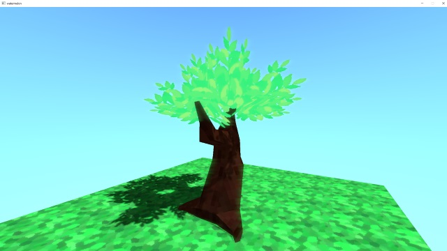

A small renderer I did during the summer using the VulkanSDK. It's my first attempt using vulkan so it's really unpolished.
I implemented shadows and bloom. The leaves in the tree have masked opacity (the implementation is not as performant as it could be).
I also implemented basic animations.
There is also parenting, serialization and a small editor. I thought it would be cool to make a small game in the future.